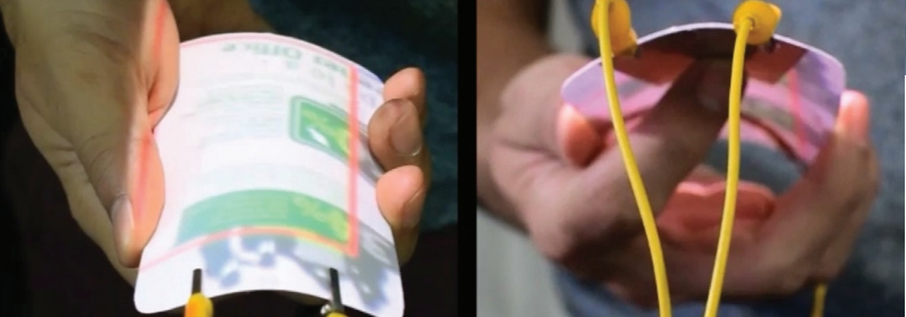
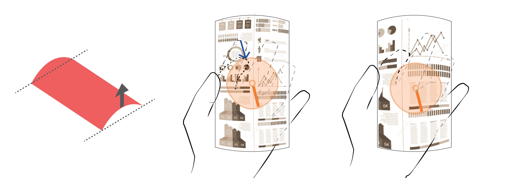
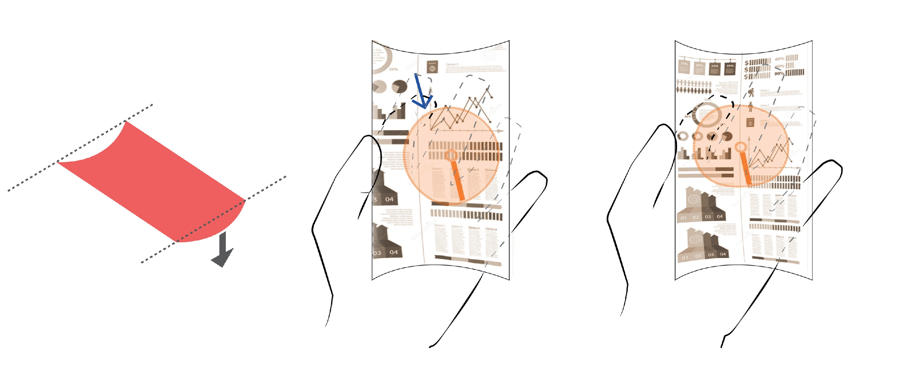

One-handed interaction for deformable user interfaces.

Quick Summary
One-hand usage of handheld devices results in poor reachability, re-gripping, occlusion and reduced accuracy. This results in poor user
experiences, especially with user interactions that require multi-finger usage. Use of deformation gestures can augment touch gestures
to extend the limited functionalities experienced in one-handed usage.
BendSwipe is a combined bend and touch enabled input interaction to perform target zooming on a flexible handheld device. It uses the
bend gestures to augment a swipe interaction performed anywhere at the back of the device to perform target zoom-in and out on any area
of the display content.
Design Rationale
We chose a combination of bend gestures and touch supported swipe gesture on the backside of the flexible handheld device to reduce the problem of occlusion and regripping.
We chose a center bend gesture due to its ease of use and intuitiveness identified in the literature. Swiping the index finger in a particular direction while performing the center bend zooms in the direction of swipe.
Interaction Design
Zoom-in and out is triggered by performing a bend and swipe gesture simultaneously.The direction of bend (in or out) detrmines the choice between zooming in and out. The direction of swipe determined the direction in which the zooming happens. The zooming is performed for as long the both the gestures are detected.
Zooming In
Bending In the center of the display surface
towards the user triggers a navigation wheel
that is displayed as an overlay on the center
of the flexible device. Performing a swipe
gesture in any direction on the rear side
triggers a zoom-in in the direction of swipe
gesture.

Bending in and swiping in the SE direction for Zoom-In
in the same direction.
Zooming Out
Bending Out the center of the display away
from the user triggers a navigation wheel
that is displayed as an overlay on the center
of the flexible device. Performing a swipe
gesture in any direction triggers a zoom-out
in the direction of swipe

Bending out and swiping in the SE direction for Zoom
Out in the same direction.
Prototype
Rear of the handheld prototype [L] and The working prototype [R].
The flexible sheet is made out of
thin laminated paper. A bend
sensor is located horizontally on
the rear side to detect the bending
direction. A conductive touch
sensor is used to detect the
direction of swipe gestures
Publication & Presentation
The 16th IFIP TC.13 International Conference on Human-Computer Interaction, 2017, Mumbai, India
[PDF]
The ACM Canadian Celebration of Women in Computing, 2017, Montreal, Canada
[PDF]